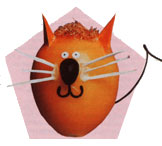
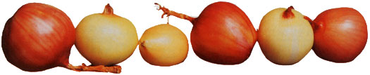

When you try this old-timey craft, you'll find that there's more to an onion than waters the eye.
Onion waxing is an old folk pastime. When I was a child, my friends and I would gather buttons, broom straws, thread, glitter, construction paper, and anything else that our imaginations told us could be used for decorations. Fashioning our onion creations provided us with many hours of entertainment, and when the designing was complete, we'd watch them sprout and grow.
I've continued the tradition of onion waxing with my own clan. It provides an ideal diversion for a rainy day, and we use the finished products as decorations, gifts, and party favors. The cost is right, too, since the only cash outlay required is that for a few of the vegetables and for a bit of paraffin. If you'd like to try the art of onion waxing with your own gang at home, let me tell you how it's done.
WHAT YOU'LL NEED
First, of course, you'll need a supply of onions. Choose some that are already sprouting and others that have yet to put forth shoots, and try to collect a variety of sizes and shapes. When waxed, onions take as little as a few days or as long as a couple of weeks to sprout . . . an unknown that adds suspense to watching your creatures when you've finished making them.
It'll take about a pound of melted paraffin (or old candles or crayons) to coat 10 to 20 onions, depending on their sizes. You can use crayons as a main ingredient of the melt, or add just a small number of them to color the wax. You'll also have to round up a metal container large enough to accommodate an onion and a melted bar of paraffin or its equivalent. Because wax can be rather difficult to remove from a pan, I suggest using a two-pound coffee can or a similar container that you can set aside to be used solely for this project. In addition, you'll need a saucepan that's big enough to hold the can in several inches of water. Never melt paraffin in a container that's set directly over a heat source, as the wax has a very low flash point and may catch fire.
Next, gather the decorating materials. Your choices for the trimmings are limited only by the range of your imagination. Broom straws, fibers, acrylic and tempera paints, ribbon, and plastic or natural flowers are just some of the items you may want to use. Other materials you'll want to have on hand are old aluminum pie pans or foil on which to set the dipped onions, inexpensive watercolor brushes for painting designs, and allpurpose glue for attaching hair, ribbons, and the like.
TAKE A DIP
Once the materials are gathered, strip the outer, paperlike layers from the vegetables until you get to a firm surface that will hold wax.
Next, place the coffee can (or whatever) in a pan of water and melt the paraffin, old candles, or crayons over medium heat. If you intend to use crayons just to tint the wax, let the paraffin or candles melt down completely before you add the coloring. Then remove the container from the heat.
To dip an onion, hold it by its tip or sprout and lower it into the wax. When the surface is coated all over, remove it and allow the wax to harden for several seconds. Repeat this operation 10 or 12 times, or until a thick layer has been built up (you may need to reheat the wax during this dipping process). Then, to form a flat base on which the onion can stand, set it on a level surface (here's where an aluminum pie pan comes in handy) for a while after each of a few final dips.
Now comes the fun part: decorating. If you plan to add adornments that must adhere to the wax, such as eyes or whiskers, you'll need to do the work quickly, before the coating hardens. Other methods of decorating-painting, for instance-work well after the wax has set up. And if by any chance you create a "monster" that you don't care to keep, simply peel of the wax, remelt it, and start anew, using the same onion.
This simple craft adds a welcome twist to our clan's rainy-day activities . . . and I think your family will agree that it's a pastime worth reviving.
|
|
|
 |
|
 |
|
|